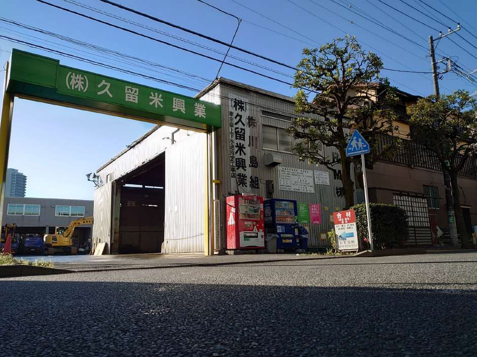
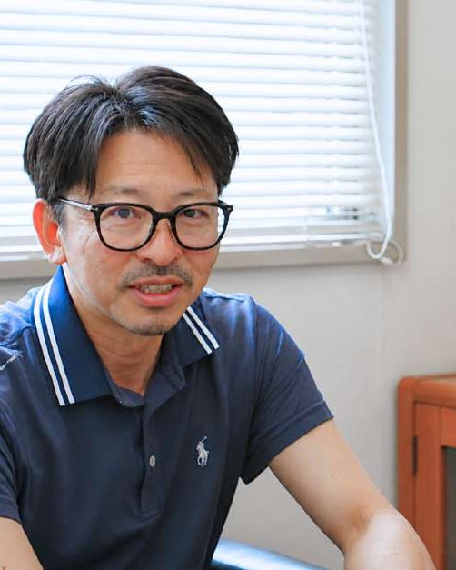
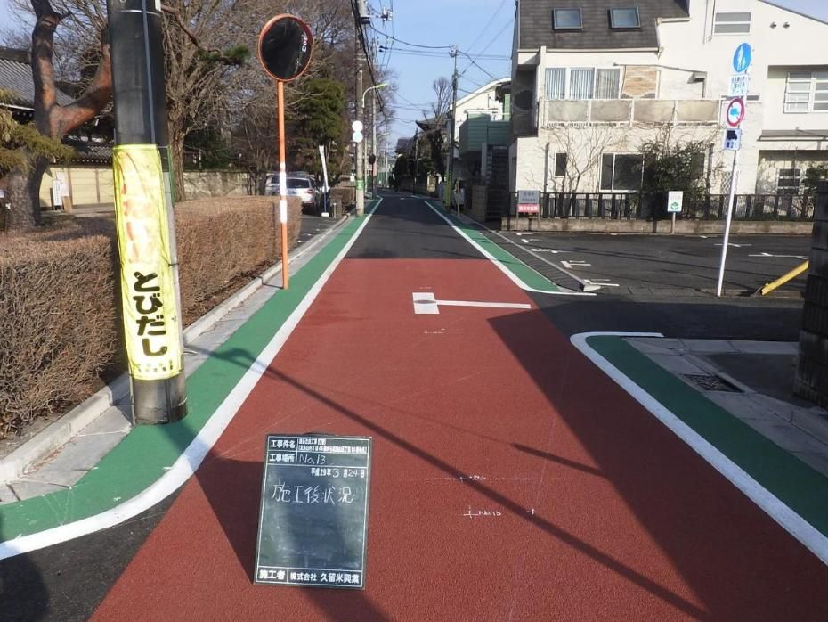
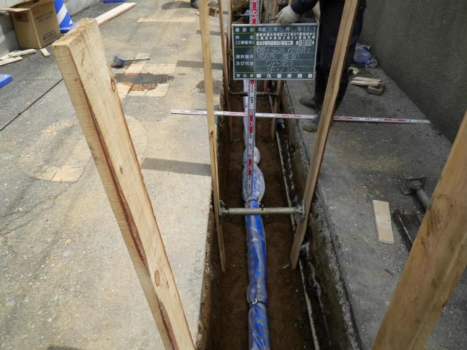
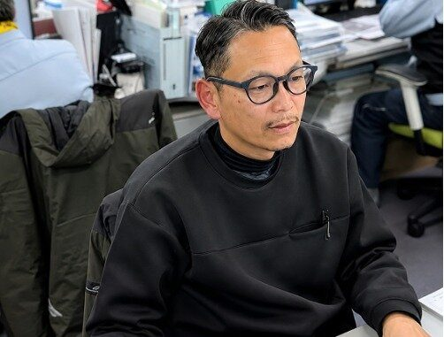
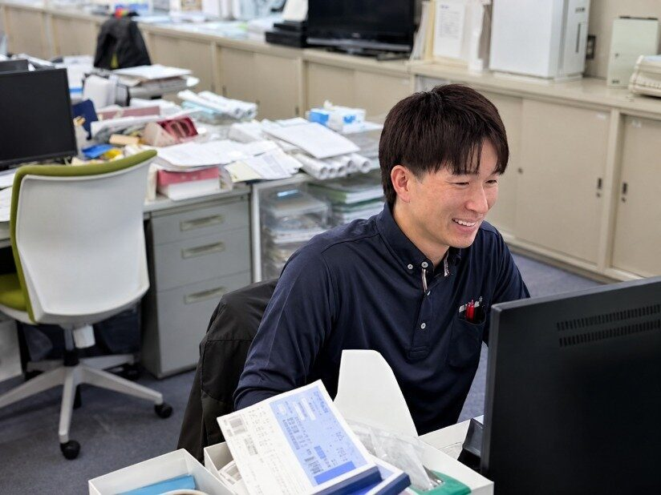
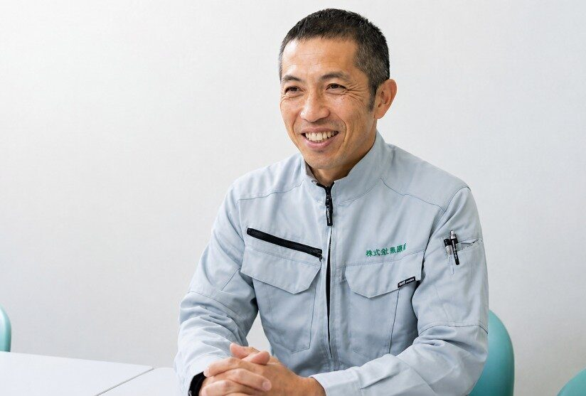
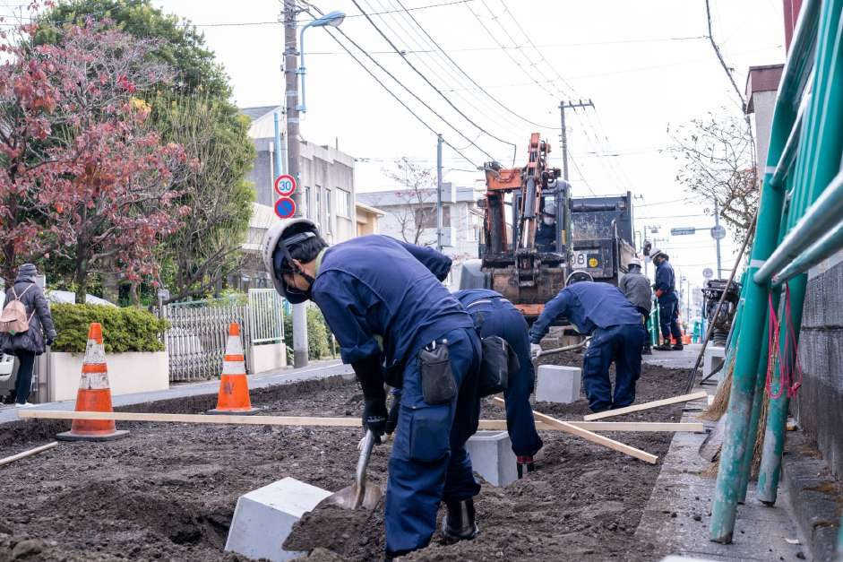

勤務時間を見直す
定時を意識し、残業時間を管理することから働き方を見直してきました。
KURUME KOGYO / SINCE 1974
道路を直し、水道を支える。その仕事をこれからも続けていくために、働く人のことも考え続ける。久留米興業が守ってきたものと、変えようとしていることをご紹介します。
OUR STORY 会社の歩み
世田谷を拠点に、道路の舗装復旧や維持、水道工事に携わってきた久留米興業。半世紀以上の歩みの先にあるのは、これからも街の暮らしを支えていくという仕事です。
会社の歩みと事業を見る
現在の本社（東京都世田谷区北烏山）

代表取締役 川島 和範
THE PEOPLE BEHIND CHANGE 代表の歩み
18歳で現場に入り、24歳で一度会社を離れた川島代表。現場・管理・経営を経験し、今は働く時間や人の負担にも目を向けながら、次の世代へつながる会社づくりを考えています。
CHANGES IN PRACTICE 働き方の見直し
昔からのやり方を続けるだけでは、働く人も仕事も守り続けられない。久留米興業では、現場の経験を持つ代表が、働き方の見直しに向き合ってきました。
定時を意識し、残業時間を管理することから働き方を見直してきました。
一人だけに無理を集中させず、人員の配置にも目を向けています。
得意なことや仕事の進め方が違っても、同じ目標へ進める関係を大切にしています。
これは代表の取り組みと方針です。現場には今も忙しい日や体力的な負担があり、その実際は採用情報の「仕事のリアル」でお伝えしています。
OUR BUSINESS 事業
道が通れること、水が届くこと。特別な出来事ではない日常を支えるために、現場で人が動き、工事が進みます。
 01
01工事が終わった道路を元のように整え、毎日の通行を支える。

02傷みや変化が生じた道路を維持・改良し、安全な通行を支える。

03暮らしに欠かせない水道インフラを整える。
雪かきや土嚢作成など、地域で必要とされる対応にも取り組む。
04は恒常的な主力事業と区別して「その他の対応」として表示しています。緊急対応の写真が届くまでは写真なしの図柄です。
REAL VOICES 社員の声
同じ会社でも、入社のきっかけや仕事の覚え方は人それぞれ。営業と現場、実際に働く人の経験から、久留米興業の姿を見てください。
営業職

お茶の営業から転職し、公共工事の現場調整と資格取得へ。
インタビュー全文を読む ↗
業界用語も分からない時期に先輩の支えを受け、仕事を覚えてきた。
インタビュー全文を読む ↗
現場での衝突を経験し、職人との対話を通じて調整力を磨いた。
インタビュー全文を読む ↗現場職
長年の現場経験から、役割分担と新人の成長について話しています。
建築から土木へ。先輩に聞きながら仕事を覚え、現場の大変さも率直に話しています。
松野さん・奥居さんの本人写真は対談資料に含まれていないため、名前と役割の文字カードで表示しています。写真が提供されたら差し替えます。
FOR THE NEXT 50 YEARS これから
これからも街のインフラを守っていくには、次の世代へ経験や技術を渡していく必要があります。未完成なところも見直しながら、人が長く働ける会社を目指しています。
久留米興業の未来を見る
JOIN OUR TEAM 採用情報
取引先と現場をつなぐ営業職。現場で手を動かし、街を整える現場職。仕事の種類も、最初に覚えることも違います。入社後を想像できるよう、実際の情報をご案内します。
WORKS & NEWS 実際の仕事
現場の写真や会社の活動にも、久留米興業の日常が表れています。施工の様子と、地域に関わる取り組みをご紹介します。